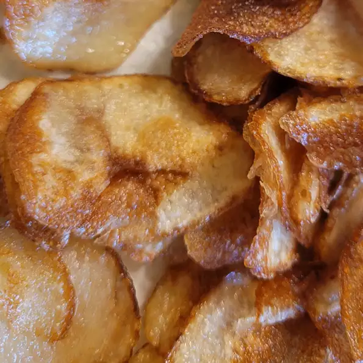

Homestyle Potato Chips

Description
It's chips.
Regular ol' chips.
Ingredients
- 4 potatoes
- 3 tablespoons of salt
- 1 quart of oil
Steps
- slice em and shove em in a bowl of water
- drain water and rinse and soak them in some salty water
- drain and rinse again and pat them dry
- heat oil in a deep-fryer to 365 degrees F
- fry em up til theyre golden and remove with slotted spoon
- salt em if you want